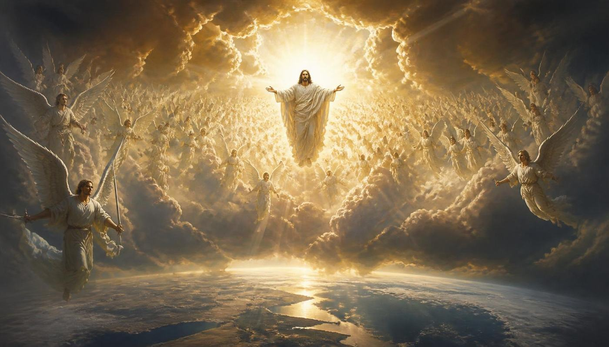
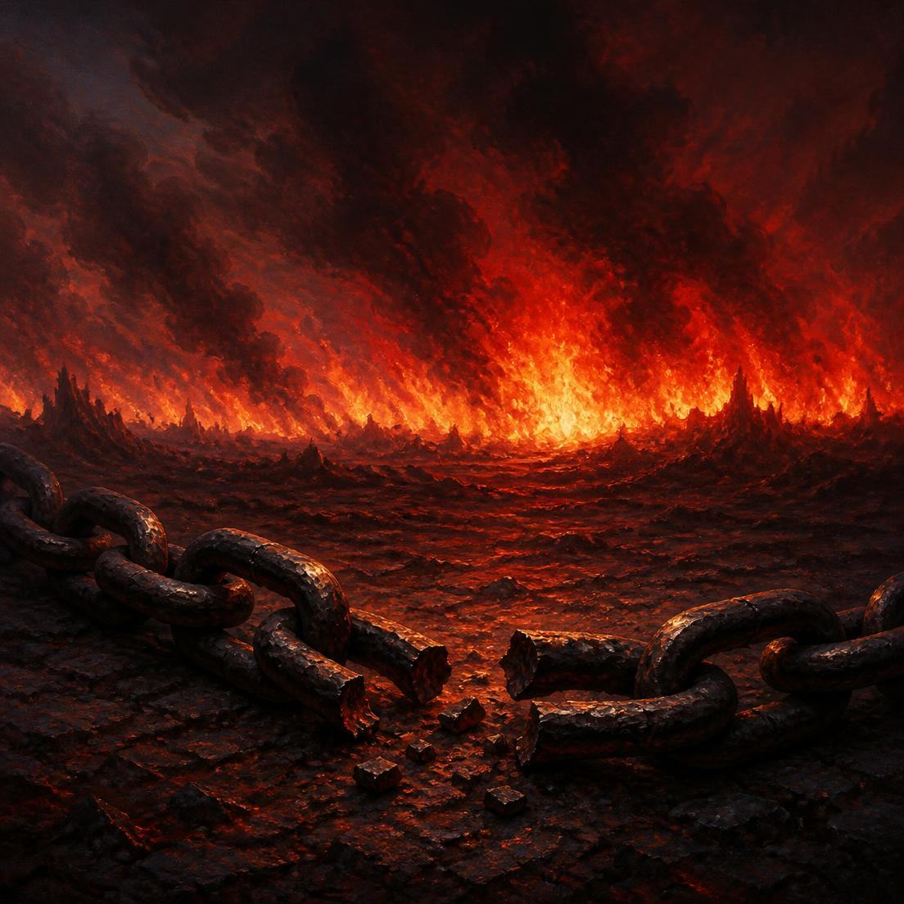
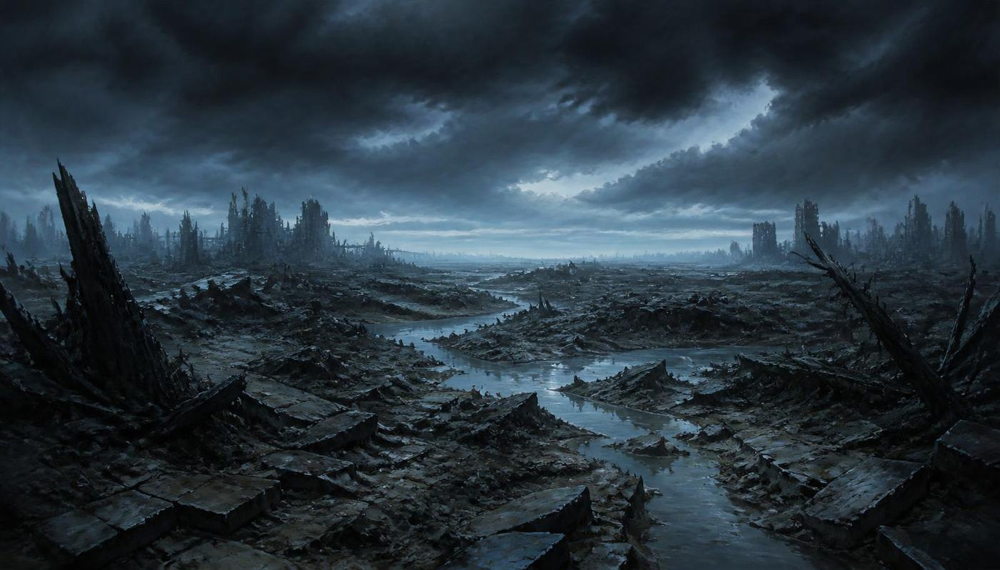
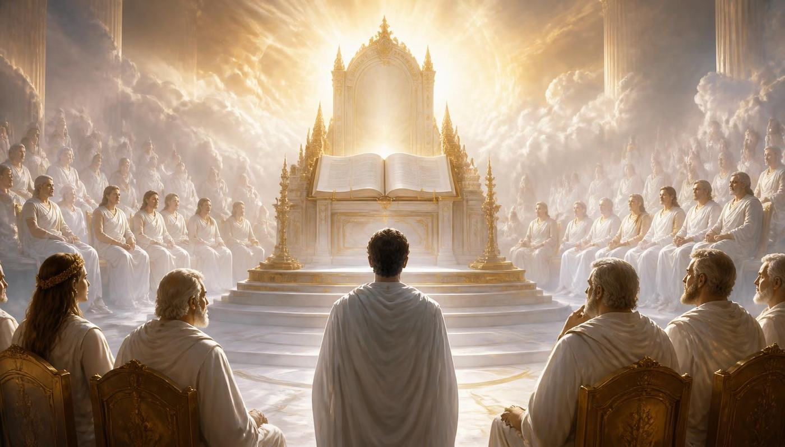
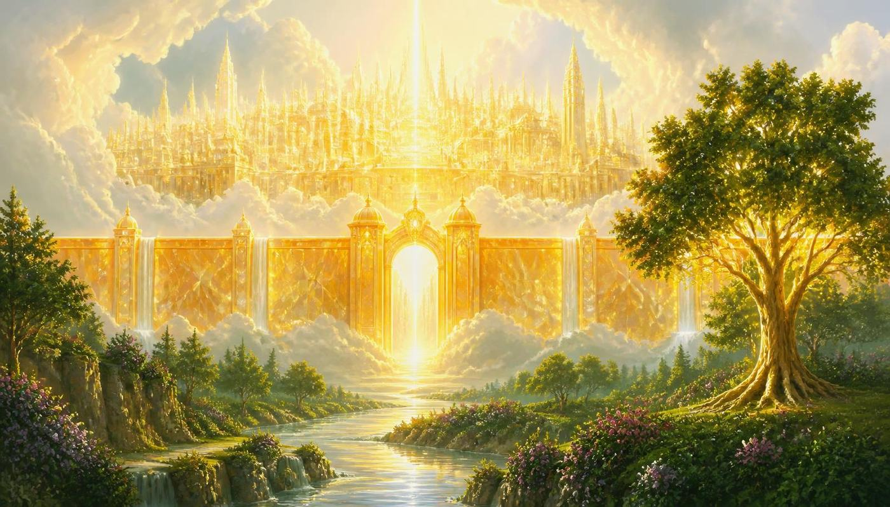
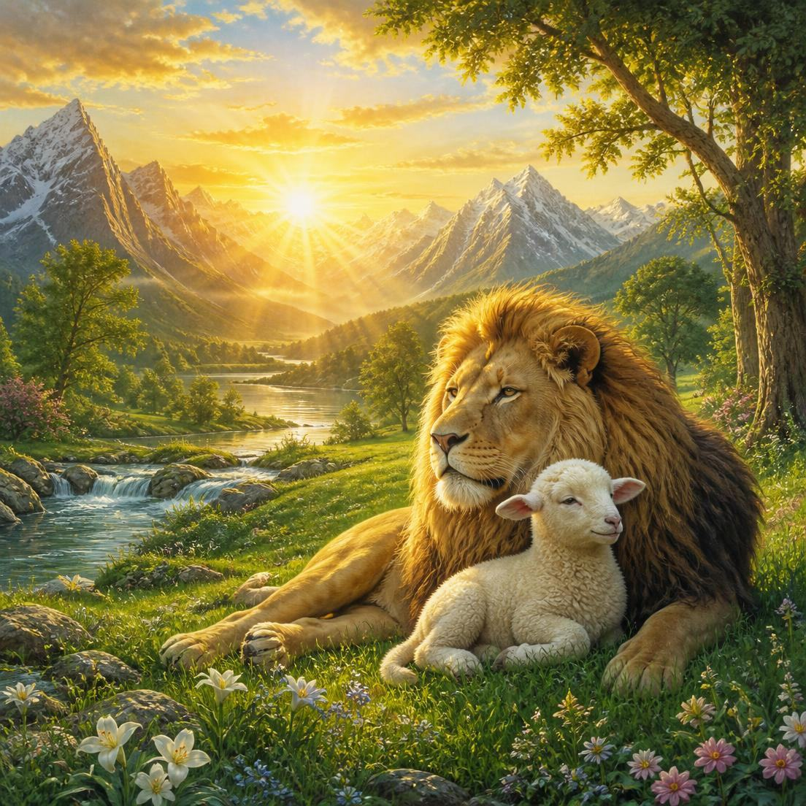

Mil anos separam a volta de Jesus da destruição final do mal. Entre esses dois marcos, o universo inteiro é convidado a examinar as decisões de Deus — até que o pecado nunca mais se levante.
Ponto de partida
Milênio significa, simplesmente, mil anos — do latim mille (mil) e annus (ano). A palavra não aparece na Bíblia, mas a expressão “mil anos” surge seis vezes em Apocalipse 20, sempre ligada a três realidades: a prisão de Satanás, o reinado dos salvos com Cristo e o silêncio dos ímpios até a segunda ressurreição.
A Igreja Adventista do Sétimo Dia ensina o chamado pré-milenismo: o milênio começa depois da segunda vinda de Jesus, não antes. Não haverá mil anos de paz e conversão do mundo aqui na Terra, nem um reino político de Cristo em Jerusalém. O milênio é vivido no Céu pelos salvos e numa Terra vazia e arruinada pelo inimigo.
“E vi tronos, e assentaram-se sobre eles, e foi-lhes dado o poder de julgar… e viveram e reinaram com Cristo durante mil anos.”Apocalipse 20:4
O destino dos salvos
Quando Jesus voltar, os mortos em Cristo ressuscitarão primeiro; em seguida, os salvos que estiverem vivos serão transformados. Juntos, os dois grupos serão arrebatados nas nuvens para encontrar o Senhor nos ares. Ninguém fica para trás numa “segunda chance”: os salvos vão com Jesus para o Céu, para as moradas que Ele mesmo foi preparar.
“Porque o mesmo Senhor descerá do céu com alarido… e os que morreram em Cristo ressuscitarão primeiro. Depois nós, os que ficarmos vivos, seremos arrebatados juntamente com eles nas nuvens, a encontrar o Senhor nos ares, e assim estaremos sempre com o Senhor.”1 Tessalonicenses 4:16-17
Jesus tinha prometido exatamente isso na noite antes da cruz: “Na casa de Meu Pai há muitas moradas… vou preparar-vos lugar. E, quando Eu for e vos preparar lugar, virei outra vez e vos levarei para Mim mesmo, para que, onde Eu estiver, estejais vós também” (João 14:2-3).


O destino dos ímpios
Para quem rejeitou o amor de Deus, a volta de Jesus não é alegria: é o encontro com a glória que não se pode suportar. Reis, poderosos e escravos se escondem nas cavernas e clamam às rochas: “Caí sobre nós e escondei-nos do rosto Daquele que está assentado sobre o trono” (Apocalipse 6:15-17).
A Bíblia é clara: os ímpios vivos morrem no resplendor da vinda de Cristo — “o Senhor Jesus desfará pelo assopro da Sua boca e aniquilará pelo esplendor da Sua vinda” (2 Tessalonicenses 2:8). E os ímpios já mortos permanecem no túmulo: “os outros mortos não reviveram até que os mil anos se acabassem” (Apocalipse 20:5).
Não existe, portanto, sofrimento consciente durante o milênio. Segundo o ensino bíblico adventista, a morte é um sono inconsciente (Eclesiastes 9:5-6; João 11:11-14). O castigo final não é um tormento eterno: é a segunda morte, que vem depois do juízo, e é definitiva.
A Terra durante os mil anos
Com os salvos no Céu e os ímpios mortos, a Terra fica completamente despovoada. As cidades ficam em ruínas pelos terremotos e pelo granizo das últimas pragas; a natureza está devastada. Jeremias, olhando em visão para esse tempo, descreveu exatamente esse cenário:
“Observei a terra, e eis que era sem forma e vazia; os céus, e não tinham luz… olhei, e eis que não havia homem nenhum, e todas as aves do céu tinham fugido.”Jeremias 4:23-25
A expressão “sem forma e vazia” é a mesma de Gênesis 1:2 (tohu wa-bohu). O planeta volta ao caos anterior à Criação — um símbolo poderoso: o pecado desfaz aquilo que Deus fez.
Satanás é preso por mil anos e lançado no “abismo” (grego ábyssos, a mesma palavra usada na Septuaginta para o caos de Gênesis 1:2). Essa prisão não é um lugar físico com grades: é uma cadeia de circunstâncias. Sem ninguém para tentar, sem nenhum ser humano vivo sobre a Terra, o diabo e seus anjos ficam confinados a este planeta arruinado, obrigados a contemplar o resultado da própria rebelião.


A obra dos salvos no Céu
O milênio não é férias eternas nem ociosidade. Apocalipse 20:4 mostra tronos e um trabalho específico: “foi-lhes dado o poder de julgar”. Paulo confirma: “os santos hão de julgar o mundo… não sabeis que havemos de julgar os anjos?” (1 Coríntios 6:2-3).
Esse é o chamado juízo executivo/revisivo. O veredito de quem é salvo já está dado — só os salvos estão ali. O que acontece durante os mil anos é a revisão dos casos dos perdidos e dos anjos caídos: os remidos examinam os livros do Céu e verificam, caso a caso, que Deus foi justo, paciente e misericordioso com cada pessoa.
É a resposta para as perguntas que todos nós já fizemos: “Por que aquela pessoa não está aqui?”, “Por que Deus permitiu aquilo?”. Ao fim dos mil anos, não sobra nenhuma dúvida no universo sobre o caráter de Deus.
Panorama
Sete movimentos que vão da segunda vinda até a eternidade sem pecado.
Visível, audível, gloriosa e literal. Primeira ressurreição: os justos mortos voltam à vida e os justos vivos são transformados.
Os salvos sobem ao Céu; os ímpios vivos morrem diante da glória de Cristo; os ímpios mortos continuam dormindo.
Sem ninguém para enganar, o diabo fica confinado à Terra em ruínas com seus anjos.
No Céu, os salvos abrem os livros, revisam os casos dos perdidos e dos anjos caídos e confirmam a justiça de Deus.
A cidade santa desce do Céu à Terra com Cristo e os salvos (Apocalipse 21:2; Zacarias 14:4).
Os ímpios ressuscitam, Satanás é solto e os reúne para atacar a cidade. Diante do trono, cada joelho se dobra e reconhece que Deus é justo.
O fogo desce, consome o pecado, a morte e o inferno. Deus cria novos céus e nova terra, onde a justiça habita.


O fim do grande conflito
Apocalipse 20:5, 7-15 e 21:2, 8 descrevem o último capítulo da guerra entre o bem e o mal.
“E eu, João, vi a santa cidade, a nova Jerusalém, que de Deus descia do céu, adereçada como uma esposa ataviada para o seu marido” (Apocalipse 21:2). Cristo, os anjos e os remidos descem com ela ao Monte das Oliveiras, que se parte e forma uma grande planície.
A segunda ressurreição devolve a vida a todos os perdidos de todas as épocas. É a “soltura” do diabo: ele volta a ter quem enganar. Reúne Gogue e Magogue — uma multidão “como a areia do mar” — e cerca a cidade santa.
Diante do grande trono branco, os livros são abertos. Toda a história é revista publicamente. Ali cumpre-se Filipenses 2:10-11: todo joelho se dobra, e até os perdidos admitem que Deus é justo e Cristo é Senhor.
“Desceu fogo do céu e os devorou” (Apocalipse 20:9). O lago de fogo é a segunda morte — definitiva, sem retorno e sem tormento eterno. Malaquias 4:1-3 diz que os ímpios se tornam “cinza debaixo das plantas dos pés”.
“E a morte e o inferno foram lançados no lago de fogo” (Apocalipse 20:14). O último inimigo é aniquilado (1 Coríntios 15:26). Satanás não reina no inferno: ele é o primeiro a ser consumido por ele (Ezequiel 28:18-19).
“A angústia não se levantará segunda vez” (Naum 1:9). O universo, tendo visto o resultado do pecado e a justiça de Deus, escolhe livremente o amor. Deus enxuga toda lágrima e cria novos céus e nova terra (Apocalipse 21:1-4).
Texto para memorizar
“Bem-aventurado e santo aquele que tem parte na primeira ressurreição; sobre estes não tem poder a segunda morte; mas serão sacerdotes de Deus e de Cristo, e reinarão com Ele mil anos.”
Apocalipse 20:6
Como decorar
| Bloco | Palavras | Ideia-chave |
|---|---|---|
| 1 | “Bem-aventurado e santo aquele que tem parte na primeira ressurreição” | Quem ressuscita quando Jesus volta é feliz e santo. |
| 2 | “sobre estes não tem poder a segunda morte” | A destruição final não os alcança. |
| 3 | “mas serão sacerdotes de Deus e de Cristo” | Terão acesso direto e serviço na presença de Deus. |
| 4 | “e reinarão com Ele mil anos” | Participarão do governo e do juízo durante o milênio. |
Dica para memorizar: repita cada bloco cinco vezes em voz alta, junte dois blocos, depois três, depois o versículo inteiro — e recite para alguém no mesmo dia. Recitar em voz alta para outra pessoa fixa muito mais do que ler em silêncio.
Compartilhar com um amigo
Um roteiro simples e amigável para você usar com um colega, um familiar ou um amigo do clube.
“Você já se perguntou como o mundo vai acabar?” Deixe a pessoa falar. Depois diga que a Bíblia responde isso em um capítulo só: Apocalipse 20 — e abra a Bíblia junto com ela.
Jesus volta → salvos vão ao Céu → Terra fica vazia mil anos → juízo com os livros abertos → a cidade desce → o mal é destruído → tudo é feito novo. Use a linha do tempo desta página como apoio.
Explique que não haverá mil anos de paz na Terra antes da volta de Jesus, que ninguém está queimando agora, e que Satanás não é o “dono” do inferno — ele também será destruído por ele.
O milênio existe porque Deus não impõe nada: Ele abre os livros para que todos vejam que Ele é justo. Amor que não pode ser questionado é amor que dura para sempre.
Leia Apocalipse 21:3-4 e Apocalipse 20:6. Pergunte: “Você gostaria de estar na primeira ressurreição?” Ore com seu amigo — esse é o objetivo real do requisito.
Escreva com quem você conversou, a data, quais textos leram e uma pergunta interessante que a pessoa fez. Esse pequeno relatório costuma ser pedido na avaliação da especialidade.
Extra
| O que muita gente diz | O que a Bíblia ensina | Texto |
|---|---|---|
| Haverá mil anos de paz na Terra antes da volta de Jesus. | O milênio começa depois da volta de Jesus, e a Terra fica desolada. | Ap 20:1-5; Jr 4:23-25 |
| Quem morre perdido já está sofrendo agora. | Os mortos dormem; os ímpios só ressuscitam no fim dos mil anos. | Ec 9:5-6; Ap 20:5 |
| O inferno queima eternamente. | O fogo é eterno em resultado, não em duração: consome e transforma em cinza. | Ml 4:1-3; Jd 7 |
| Satanás governa o inferno. | Ele é vítima do fogo, não seu dono; será reduzido a cinzas. | Ez 28:18-19; Ap 20:10 |
| Os salvos ficam tocando harpa sem fazer nada. | Reinam, julgam, servem como sacerdotes e aprendem para sempre. | Ap 20:4-6; 1Co 6:2-3 |
| A salvação será decidida durante o milênio. | O destino de cada um é definido antes da volta de Jesus. | Ap 22:11-12 |
Depois do milênio
O grande final da história não é o Céu para sempre: é a Terra restaurada. Depois que o fogo purifica o planeta, Deus cria “novos céus e nova terra, nos quais habita a justiça” (2 Pedro 3:13), e a Nova Jerusalém se torna a capital do universo.